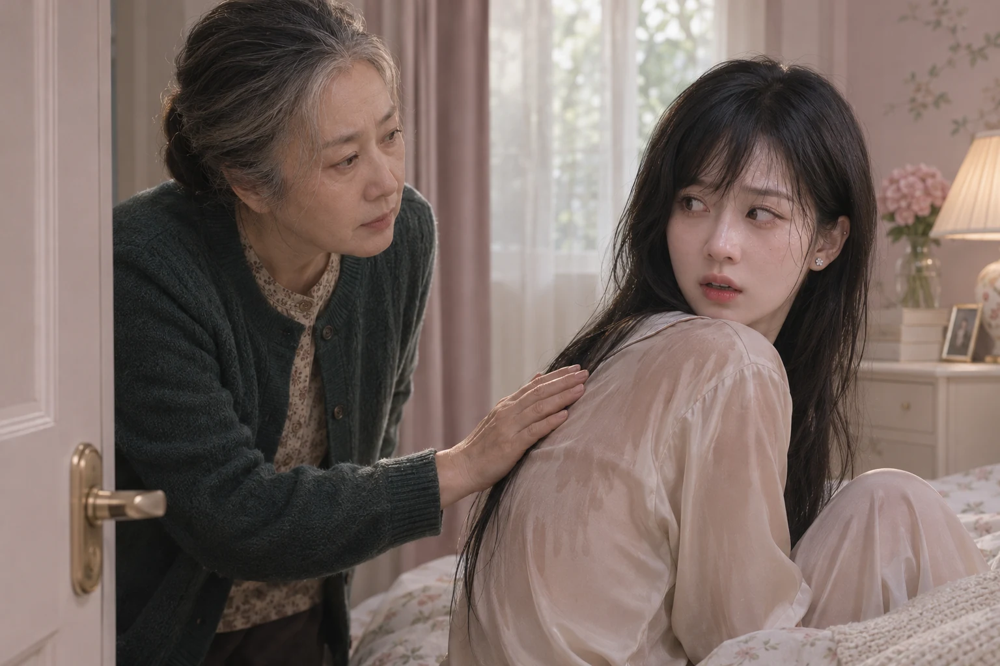
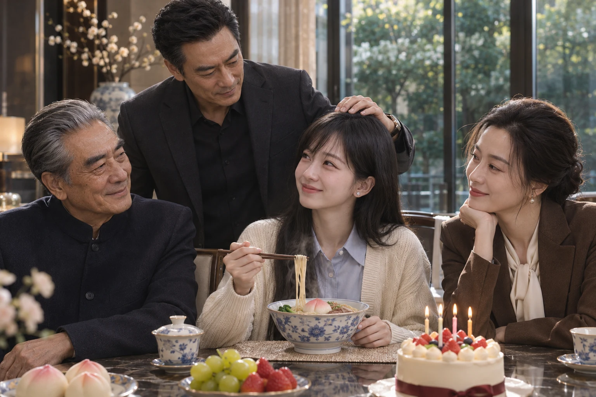
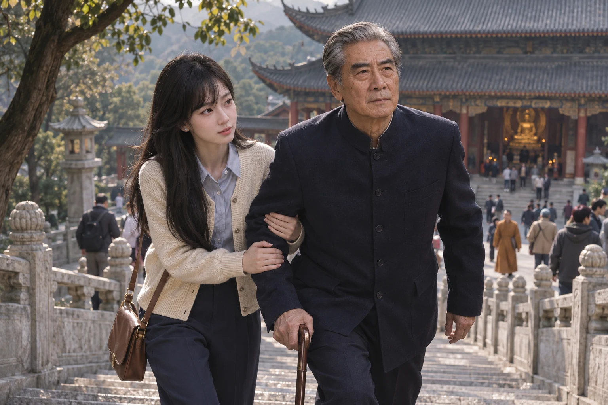
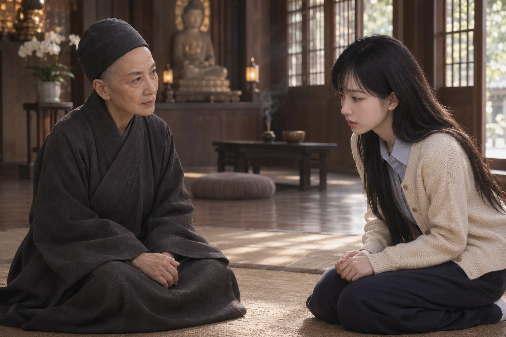

ตอนที่ 01
ฝันบอกเหตุ
ภายในห้องนอนซึ่งตกแต่งด้วยสีพาสเทลสดใส หญิงสาวเจ้าของห้อง นอนหลับอยู่บนเตียงด้วยท่าทางกระสับกระส่าย เส้นผมของเธอยาวสลวยดำขลับ แผ่สยายทั่วหมอน ใบหน้ารูปไข่ขาวนวลขึ้นสีแดงก่ำ คิ้วเรียวได้รูปขมวดเข้าหากันแน่น จมูกโด่งรั้นเล็ก ๆ หอบหายใจเอาอากาศเข้าปอด ปากกระจับสีชมพูอ่อนพึมพำไม่ได้ศัพท์ กระทั่งเสียงนาฬิกาปลุกดังขึ้น
“เฮือก!!” ร่างอ้อนแอ้นดีดตัวขึ้นจากเตียง สิ่งที่เห็นในความฝันเหมือนจริงมาก พานให้รู้สึกเจ็บปวดและหายใจไม่ออก เม็ดเหงื่อไหลซึมทั่วแผ่นหลัง ขัดกับอากาศเย็นสบายภายในห้องนอน
ซ่งอวิ๋น คุณหนูใหญ่ตระกูลซ่ง ได้รับความรักความอบอุ่นจากครอบครัวอย่างล้นหลาม และเป็นลูกสาวคนเดียว เธอจึงถูกเอาอกเอาใจจากคุณปู่คุณย่า และยิ่งเธอเกิดจากบ้านสายหลัก จึงยิ่งถูกให้ความสำคัญตั้งแต่ลืมตาดูโลก
ทว่าจู่ ๆ วันนี้เธอก็ฝันร้าย ในฝันนั้นทุกคนเป็นเพียงตัวละครในหนังสือ ในขณะที่พี่สาวนอกสมรสซึ่งกำลังจะถูกพ่อพาเข้ามาในตระกูลคือนางเอกที่คิดจองล้างจองผลาญตระกูลซ่งให้ล่มจม
ด้วยข้ออ้างที่ว่าชาติก่อนตนเองเป็นลูกนอกสมรสที่ไม่ได้รับความใส่ใจจากตระกูล พอได้ย้อนกลับมาจึงอยากแก้แค้น แถมยังผนึกกำลังกับพระเอกจิตไม่ปกติ ตระกูลซ่งที่เป็นเพียงตัวประกอบจึงถูกทำลายอย่างง่ายดาย
ยิ่งคิดซ่งอวิ๋นยิ่งหายใจไม่ออก เธอไม่อยากเชื่อว่าพ่อที่แสนดีและอบอุ่นจะพาลูกนอกสมรสเข้ามาเหยียบหัวใจแม่ของเธอถึงในบ้าน แถมยังเป็นลูกสาวที่เกิดจากรักแรก อายุไล่เลี่ยกับเธอ ห่างเพียงสองเดือนเท่านั้น
มันเป็นเครื่องยืนยันว่าตลอดเวลาที่แต่งงานกันมา พ่อไม่เคยซื่อสัตย์เลยสักวัน
“ฝันร้าย.. มันก็แค่ฝันร้าย” หญิงสาวยกมือลูบอกตัวเองช้า ๆ บรรเทาอาการตื่นตกใจ แม้ปากจะปลอบตนเองเช่นนั้น ทว่าในสมองเธอกลับจำหน้าลูกสาวนอกสมรสคนนั้นได้ขึ้นใจ
“คุณหนูคะ ตื่นแล้วใช่ไหมคะ” เสียงหญิงสูงวัยดังขึ้นหน้าประตูห้องนอน มาพร้อมกับเสียงเคาะประตูเบา ๆ
“ตื่นแล้วค่ะนม” ซ่งอวิ๋นปาดเหงื่อบนใบหน้า สูดลมหายใจเข้าช้า ๆ เพื่อตั้งสติ ก่อนเดินออกไปเปิดประตูให้แม่นมฝางอย่างเช่นที่เคยทำทุกวัน
“คุณหนู? ฝันร้ายหรือเปล่าคะ”
“นมรู้ได้ยังไงคะ” ร่างอ้อนแอ้นกะพริบตาปริบ ๆ อย่างประหลาดใจ
“ดูสิคะ เสื้อเปียกไปหมดเลย” แม่นมฝางแตะเสื้อบริเวณแผ่นหลัง มันเปียกแฉะเป็นวงกว้าง

“เพราะแบบนี้เอง” ซ่งอวิ๋นลูบหลังคอตัวเองพลางยิ้มแห้ง ๆ “หนูฝันร้ายจริง ๆ นั่นแหละค่ะ ตั้งแต่เกิดมาไม่เคยฝันร้ายขนาดนี้มาก่อนเลย”
ฝันว่าวิ่งหนีฝูงซอมบี้ เธอยังไม่เหนื่อยและปวดแปลบในอกเท่านี้
“อยากเล่าให้นมฟังไหมคะ” หญิงชราไม่ต้องการคาดคั้น หากคุณหนูเต็มใจเล่า ก็คงพูดออกมาเอง
“ไม่เป็นไรค่ะ แค่ความฝันเท่านั้นเอง พออาบน้ำจนสดชื่นแล้วคงรู้สึกดีขึ้น” ซ่งอวิ๋นไม่อยากนึกถึงมันอีก คาดหวังให้มันเป็นเพียงฝันร้ายตื่นหนึ่ง
“ได้ค่ะ วันเกิดคุณหนูทั้งที ไม่ควรพูดเรื่องไม่ดี งั้นอาบน้ำนะคะ เดี๋ยวนมเตรียมชุดไว้ให้” แม่นมฝางดันหลังคุณหนูที่ตนเองโอบอุ้มมาตั้งแต่อ้อนแต่ออกเข้าไปในห้องอาบน้ำ ส่วนเธอก็เตรียมของใช้ของคุณหนูอย่างตั้งอกตั้งใจ
ซ่งอวิ๋นจัดการธุระส่วนตัวเรียบร้อยแล้วก็ลงจากห้องนอนไปยังห้องอาหาร แต่เรื่องที่เห็นในความฝันยังติดอยู่ในสมอง แต่ยามร่วมโต๊ะอาหารเธอกลับยิ้มแย้มเป็นปกติ สายตาไม่วายจับสังเกตผู้เป็นพ่อตลอดเวลา
“เสี่ยวอวิ๋น ตักบะหมี่อายุยืนกินสักคำนะ” ท่านผู้เฒ่าซ่งเลื่อนถ้วยบะหมี่อายุยืนให้หลานสาว
ปีนี้ ‘ซ่งเต๋อ’ อายุ 73 ปีแล้ว แต่เขายังแข็งแรงกระฉับกระเฉง เส้นผมสีดอกเลามีสีดำแซมให้เห็นอยู่ประปราย ภายใต้ความใจดีที่มีต่อหลานสาว แฝงความเด็ดขาดและดุดันตามประสาอดีตหัวหน้าตระกูล
“หนูจะกินเยอะ ๆ เลยค่ะคุณปู่” ซ่งอวิ๋นทำตัวเป็นเด็กว่านอนสอนง่าย คีบบะหมี่อายุยืนใส่ปากเคี้ยวราวกับมันเอร็ดอร่อยนักหนา
ในฝัน.. จู่ ๆ คุณปู่ของเธอก็ป่วยหนัก และเสียชีวิตจากไปหลังจากพ่อพาพี่สาวต่างแม่เข้ามาในบ้านเพียงไม่นาน ทั้งที่ปกติแล้ว ร่างกายท่านแข็งแรงพอ ๆ กับพ่อของเธอเสียด้วยซ้ำ
“ค่อย ๆ เคี้ยวสิลูก เดี๋ยวติดคอนะ” โจวจิ่วตักเตือนลูกสาวอย่างอ่อนอกอ่อนใจ ก่อนหันไปกล่าวกับสามี “ดูสิคะคุณ โตป่านนี้แล้วแท้ ๆ ยังเคี้ยวตุ้ย ๆ เหมือนกระรอกอยู่อีก”
ซ่งเหวินหลุดจากภวังค์ความคิด คัดค้านภรรยาพลางลูบศีรษะบุตรสาวอย่างรักใคร่เหมือนเช่นที่ผ่านมา “เสี่ยวอวิ๋นของเรายังเล็กอยู่เลย โตที่ไหนกัน”

ซ่งอวิ๋นหลับตาลง เพราะพ่อเป็นแบบนี้ ทำให้เธอไม่อยากเชื่อว่าสิ่งที่เห็นในความฝันเป็นเรื่องจริง เขายอมทุ่มทุกอย่างเพื่อลูกสาวนอกสมรส ด้วยเหตุผลที่ว่าต้องการชดเชยที่ปล่อยให้ลำบากตลอดหลายปี
“ปีนี้จะไปทำบุญเหมือนเดิมใช่ไหม” ท่านผู้เฒ่าซ่งถามลูกสะใภ้ เพราะปกติแล้ว วันเกิดทุกปี เธอจะไปทำบุญที่อาราม เพราะย่าของเธอเป็นแม่ชีอยู่ จึงถือโอกาสนี้ไปขอพรจากผู้เป็นย่า
นายหญิงผู้เฒ่าซ่งตัดสินใจบวชเป็นชีตั้งแต่อายุ 60 ปี เพราะท่านชอบความสงบ ซึ่งซ่งเต๋อก็เข้าใจความต้องการของภรรยา จึงไม่คัดค้าน ปล่อยให้เธอได้ทำตามความปรารถนา ผ่านมา 13 ปีแล้ว ท่านไม่ได้มีภรรยาใหม่ ยังคงหาเวลาไปอารามที่ภรรยาบวชเพื่อถวายปัจจัยบูรณะวัด อย่างน้อยก็อยากให้ภรรยาใช้ชีวิตอยู่ในอารามอย่างสะดวกสบายที่สุด
“ค่ะคุณพ่อ แต่ปีนี้อาเหวินไม่ได้ไปด้วย เขามีงานเข้ามากะทันหัน จะกลับมาตอนจัดงานเลี้ยงทีเดียวเลย” โจวจิ่วไม่ได้ต่อว่าสามี ปกติแล้วเขาก็ทำหน้าที่พ่อเป็นอย่างดี เพิ่งไปด้วยไม่ได้ปีนี้เป็นปีแรกเท่านั้นเอง
“ใช่ครับพ่อ ฝากเสี่ยวอวิ๋นกับอาจิ่วด้วยนะครับ”
“ไปทำงานเถอะ ฉันดูแลหลานสาวกับลูกสะใภ้ได้” ผู้เฒ่าซ่งโบกมือปัดอย่างไม่คิดมาก
ซ่งอวิ๋นยังคงคีบบะหมี่เข้าปากโดยไม่ได้พูดอะไร การเป็นหลานสาวคนเดียวของตระกูล ท่ามกลางพี่ชายน้องชายจากสายรองและสายสาม เธอไม่ได้ถูกตามใจเท่านั้น แต่เธอโดนฝึกด้านจิตใจและด้านร่างกายมาอย่างหนัก อย่างน้อยการต่อสู้ก็ไม่ด้อยกว่าบอดี้การ์ดรับจ้าง
ทว่าเรื่องราวในความฝัน ทุกอย่างเกิดขึ้นกะทันหันเกินไป เธอไม่ทันตั้งตัวก็ถูกความจริงถาโถมซ้ำแล้วซ้ำเล่า พ่อเปลี่ยนจากหน้ามือเป็นหลังมือ ขณะที่เธอถูกพี่สาวนอกสมรสใส่ร้าย อีกฝ่ายดึงพี่ชายนอกชายไปเป็นพวกทีละคน
สุดท้ายเธอกับแม่ก็กลายเป็นแกะดำ จุดจบย่ำแย่ไม่ต่างจากหนูข้างถนน ส่วนคนในตระกูลกว่าจะรู้ตัวว่าถูกหลอก ก็สายเกินแก้เสียแล้ว
หวังว่าคืนนี้ พ่อของเธอจะไม่ทำเหมือนในความฝัน..
...
อารามขนาดใหญ่ตั้งอยู่ในแถบชานเมือง ถึงอย่างนั้นก็ยังมีผู้แสวงบุญตบเท้าเข้ามาสักการะพุทธองค์อย่างล้นหลาม ซ่งอวิ๋นเงยหน้ามองบันไดหลายสิบขั้นก็ประคองแขนผู้เป็นปู่เดินขึ้นไปช้า ๆ

สิ่งแรกที่ทำหลังมาถึงอารามคือการไปหาผู้เป็นย่าซึ่งบวชเป็นชีอยู่ในอาราม ทันทีที่ก้าวเข้ามาในหอปฏิบัติธรรม ความไม่สบายใจทั้งหมดก็ราวกับถูกปัดเป่าออกไปอย่างน่าอัศจรรย์
เธอคลานเข่าไปนั่งตรงหน้าย่าซ่ง ค้อมคำนับก่อนประนมมือระดับศีรษะ ทันทีที่สบตากัน แม่ชีจ้าวก็รู้ทันทีว่าหลานสาวมีเรื่องไม่สบายใจ
“ประสกอวิ๋นโตขึ้นอีกปีแล้ว เวลาช่างผ่านไปเร็วเสียจริง” แม่ชีสูงวัยส่งยิ้มมากเมตตาให้หลานสาว เธออุ้มหลานสาวคนนี้จนถึงอายุไม่กี่ขวบ หลังจากนั้นก็ได้เจอกันปีละ 2-3 ครั้ง เด็กโตเร็วจนน่าใจหาย แต่ก็นับว่าเป็นสัจธรรมของโลก
จ้าวอิ๋น หรือย่าซ่งที่ซ่งอวิ๋นเรียกจนติดปากมีใบหน้าที่เต็มไปด้วยความเมตตา ดวงตาล้ำลึกดั่งผู้แสวงธรรมซึ่งละทางโลกและปฏิบัติธรรมอย่างเคร่งครัดมาเนิ่นนาน
“สวยเหมือนคุณย่าสมัยสาว ๆ เลยใช่ไหมคะ” ซ่งอวิ๋นยิ้มทะเล้น จนถูกมารดาเอ็ดไปหนึ่งที
“ไม่เอาลูก ตอนนี้ท่านเป็นชี เรียกให้ถูกต้อง”
“เอาเถอะ อย่าดุลูกเลยประสกจิ่ว” แม่ชีจ้าวหัวเราะไม่ถือสา ต่อให้ละทางโลกออกบวชเป็นชี แต่เธอก็ยังเป็นย่าของเด็กอีกหลายคน ความจริงข้อนี้ปฏิเสธไม่ได้ คิดแล้วก็เหลือบสายตามองสามีทางนิตินัย เห็นเขายังคงแข็งแรงมีชีวิตชีวาก็เบาใจลง “ฉันขอคุยกับประสกอวิ๋นสักเดี๋ยวเถอะ”
โจวจิ่วสบตาพ่อสามี เมื่อเห็นท่านพยักหน้ารับเธอจึงถอยห่างออกไปจากระยะการได้ยิน
“เกิดอะไรขึ้นใช่ไหม”
“คุณย่าทราบเหรอคะ”
“ย่าลองดูดวง เห็นบางอย่างผิดปกติ” จ้าวอิ๋นเปลี่ยนสรรพนามตนเอง เพราะคิดว่าเรื่องที่จะพูดต่อไปนี้ค่อนข้างสำคัญ
ซ่งอวิ๋นนิ่งไปนิด เพิ่งนึกขึ้นได้ว่าย่าของเธอเป็นคนที่ดูดวงแม่นอย่างยิ่ง เพราะตระกูลของท่านเป็นตระกูลนักทำนายมาหลายชั่วอายุคน ย่าจึงได้สืบทอดวิชามาอย่างเต็มเปี่ยม
“เมื่อคืนหนูฝันร้ายค่ะคุณย่า แต่หนูไม่รู้ว่าเป็นแค่ฝัน หรือเป็นลางบอกเหตุ”

“อะไรจะเกิดก็ต้องเกิด หลานเพียงตั้งรับมันด้วยสติ ย่าเชื่อว่าจะผ่านไปได้ แต่ตอนน้ำเชี่ยวห้ามนำเรือไปขวาง ทำอย่างที่ปู่ของหลานสอนไว้ รู้จักรุก รู้จักถอย ดูจังหวะโต้กลับให้ดี เป็นไผ่ลู่ลมได้ ก็เป็นต้นไม้ใหญ่ที่สร้างร่มเงาได้เช่นกัน”
ซ่งอวิ๋นกลืนน้ำลายลงคออึกใหญ่ ย่าต้องเห็นอะไรตอนทำนายดวงแน่ ๆ ถึงเตือนเธอเช่นนี้ แต่เธอเข้าใจว่าการดูดวงชะตาก็มีกฎอยู่ หากแพร่งพรายเกินไป ค่าตอบแทนย่อมมหาศาล